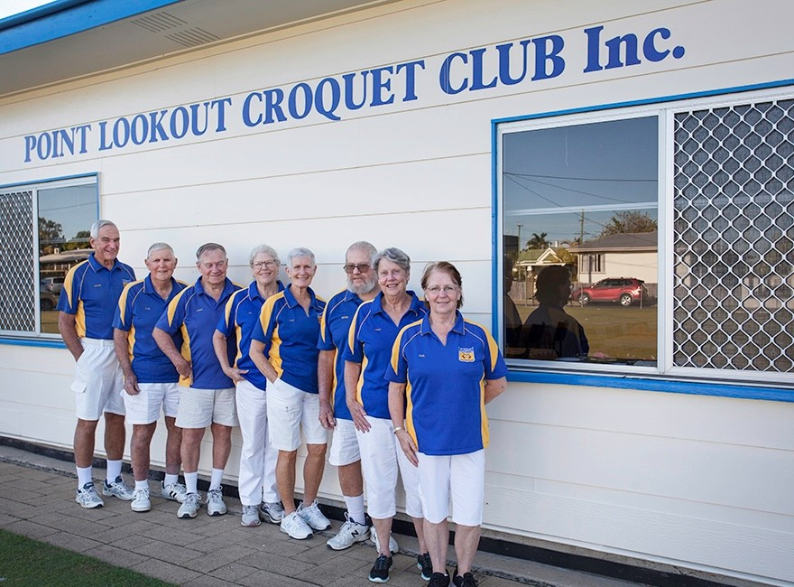

Point Lookout, Maryborough
Four lawns, 33 Members, Cards played on Monday 1PM, mahjong played on Thursday 1PM

The Lead Story
A lawn on the bay, and a club that grew around it
POINT LOOKOUT HISTORY On 21st September 1898 the Point Lookout Croquet Club was formally opened and named in the grounds of Stirling House in North Street, Maryborough, witnessed by a large gathering of over a hundred ladies and gentlemen. At that time Maryborough was the only major port north of Brisbane. To notify the workers at the Maryborough wharfs that a ship was approaching, a lookout was stationed, where Churchill Street meets the river, to signal its approach, hence the name Point Lookout. The Club operated from Stirling House for three years, In 1900 the first intercity tournament was conducted in Maryborough between Point Lookout and a Brisbane team. The following year Point Lookout made a return visit to Brisbane. They were successful on both occasions. Soon after the information of Point Lookout, two other croquet clubs were started in Maryborough. These operated for several years, finally closing in the 1960’s. Clubs also opened in Gympie, Childers, Bundaberg, and Hervey Bay. Intercity games were played with members travelling first by train and then by bus to participate. These trips were very popular and a great social occasion. Intercity competitions are still being held today. Unfortunately, the Gympie Club no longer exists. In 1902 Point Lookout was offered, and accepted, rental of its present site at 23 North Street, for ten pounds annually. In 1956, following the death of Miss Bonarius, the last remaining member of the family that owned the land, a decision was made to purchase. Mrs Alf Wynne, Patroness, and wife of the founder of Station 4MB, loaned the club the money to buy the land. When the loan was repaid, she donated the interest charged back to the club. Point Lookout is the only Croquet Club in Queensland that owns its own courts. From that time until present the club has progressed under the leadership of many dedicated members whose efforts ensured that Point Lookout increased the number of courts to four, added a club house and several sheds for storage and operated successfully and continually for the 125years it has existed. Point Lookout produced several players who played State, National and Interstate levels. One, Lorraine Bray, is listed on the Queensland Croquet Hall of Fame and the Australian Croquet Hall of Legends. The history of the club was celebrated at the Clubhouse on the 21st of September 2023 with a luncheon at which over 50 past and present members and guests attended. Fund Raising Point Lookout fund raises via- PLAYING Cards on a Monday, and, Mahjong on a Thursday. We hold events such as High Teas etc. We have club Tournaments, Regional Tournaments, Open Tournaments, and have started and new monthly Shield Tournament to encourage people to our town and our club. Our Mission We wish to grow our club membership through advertising, social media and come & try days. We have a strong history and our members are mainly the retired and aged. In saying that people of all ages are discovering Croquet is a stimulating way to get healthy exercise, and, have a good time together. Our members volunteer their time to help with the maintenance of the courts and grounds, which of course is forever ongoing and costly. We have a great camaraderie and friendship within our club. We are always brainstorming ways to encourage people to try our wonderful game.
Where
23 North Street
When we play
Tue 8:30am — Golf Croquet Sat 8:30am — Golf Croquet Tuesday 1:00pm — Association Croquet Wednesday 8:30am — Ricochet Croquet Friday 1:00pm — Golf,Ricochet,Association Saturday 1:00pm — Social all codes
Fees
$480.00 Annually
Contact
- Phone0407739120
- Emailpointlookout@croquetqld.org